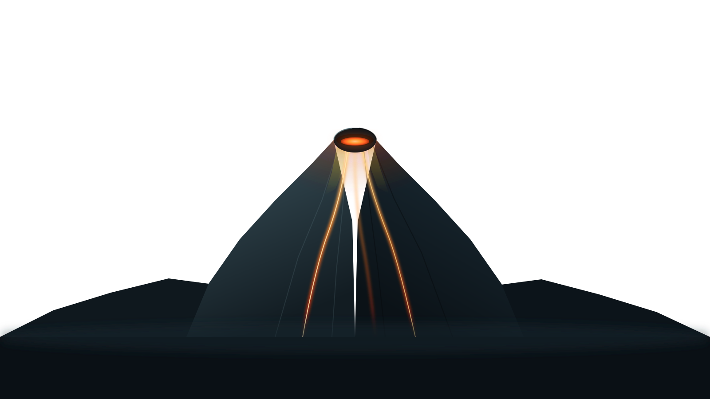
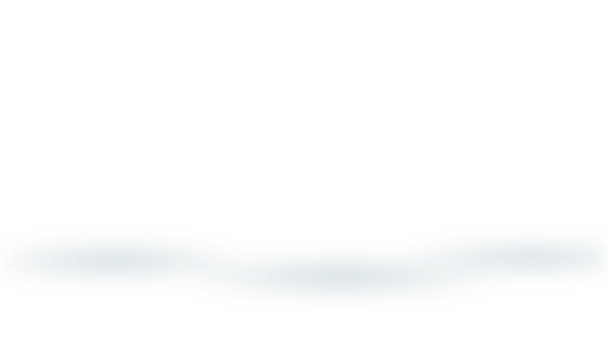
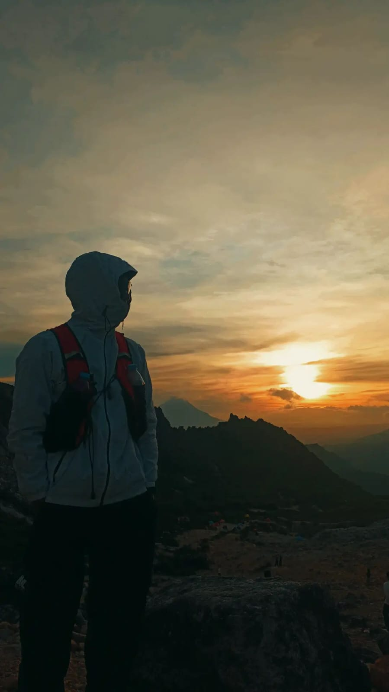
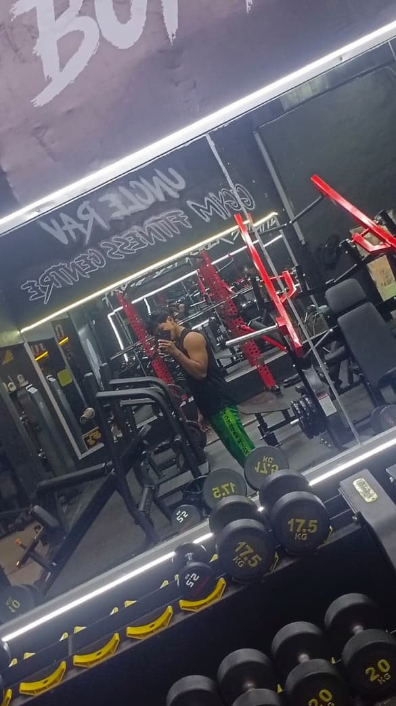
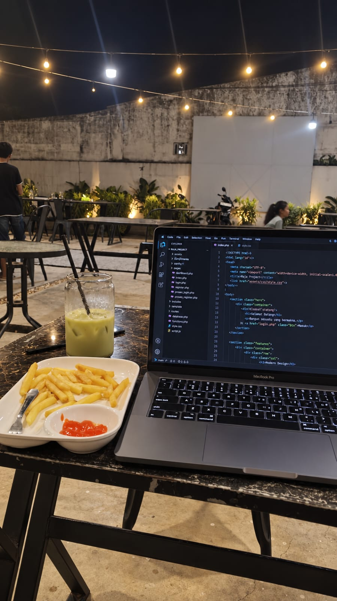

01
01
Suka menjelajah alam, mendaki, dan melakukan perjalanan jauh. Dari setiap perjalanan saya belajar untuk tetap berjalan, menghargai proses, dan tidak mudah menyerah.
01
Pelajar XII RPL 1 Pencinta alam Dunia gym Web developer
M. Raja Siyo — Portofolio

M. Raja Siyo
Pelajar XII RPL 1
Tarik bet namanya, lalu lepas



Klik foto untuk melihat berikutnya
ABOUT ME
Saya M. Raja Siyo , seorang pelajar kelas XII RPL 1 di sekolah swasta SMK Mandiri .
Saya punya tiga hal yang paling sering saya jalani: pencinta alam, gym, dan web development. Dari alam saya belajar tentang daya tahan dan tidak gampang menyerah. Dari gym saya belajar tentang kekuatan dan konsistensi.
Sedangkan dari web development saya belajar bagaimana membuat sesuatu dari nol, mulai dari tampilan sampai sistem yang bisa digunakan.
ABOUT ME
Hal-hal yang paling sering mengisi waktu dan terus saya kembangkan. Dari setiap prosesnya, saya belajar tentang konsistensi, disiplin, dan bagaimana menjadi versi diri yang lebih baik.
01
Suka menjelajah alam, mendaki, dan melakukan perjalanan jauh. Dari setiap perjalanan saya belajar untuk tetap berjalan, menghargai proses, dan tidak mudah menyerah.
Suka latihan beban dan terus meningkatkan kekuatan. Salah satu latihan yang saya lakukan adalah rowing dengan beban 20 kg. Gym mengajarkan saya tentang disiplin, konsistensi, dan mental yang kuat.
 02
02
 03
03
Belajar membuat website dari tampilan sampai sistemnya menggunakan HTML, CSS, JavaScript, PHP, dan MySQL. Saya suka membuat sesuatu dari nol dan melihat hasilnya bisa digunakan.
Adegan gunung meletus yang digerakkan scroll, lengkap dengan mode pagi dan malam. HTML, CSS, dan JavaScript murni, tanpa library.
Fisika ayunan bet nama, partikel bara api di canvas, dan parallax sepuluh lapisan.
PHP dan MySQL untuk form, login, dan data yang perlu disimpan.